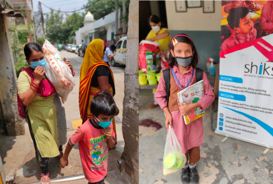
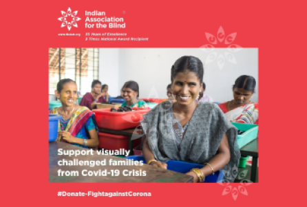
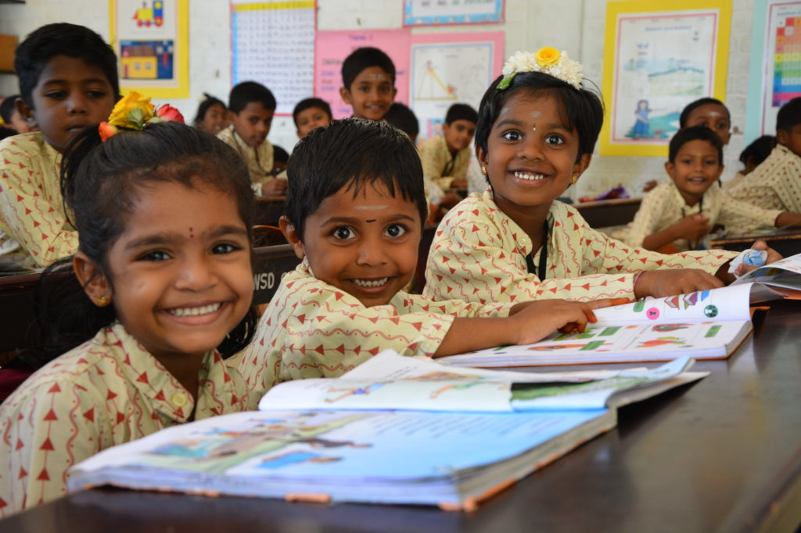

We are humanitarian organization that is committed to improving the quality of life for children and their families around the world. Our goals are accomplished by helping to provide regular feeding and educational programs, humanitarian aid and medical supplies, and educational opportunities for impoverished children. Feed God’s Hungry Children also places a high importance on providing spiritual support as well as physical care to provide precious children and families.

Donate to Shiksha to help us in our mission to provide free education for underprivileged children and youth in Delhi-NCR!
During the COVID 19 pandemic, we have continued to provide nutritional support to families, and have switched to a completely online mode of classes and training.

The COVID-19 pandemic has caused devastation across the globe. This has just begun to unfold in India and the job losses are mounting, especially among the daily wage workersand now this is your chance to remember and save the livelihood of 200+ visually challenged daily workers families affected by COVID through your timely donations.
This will help them acquire their basic living needs.

Isha Vidhya's English-medium schools provide high quality school education to rural children in India who cannot otherwise access or afford it. The schools adopt a nurturing, holistic approach to education, helping children learn joyfully. 64% of the children get full sponsorship while rest pay a subsidized fee. Your donation goes towards critical infrastructure like learning material (including STEM), classrooms, school bus, etc. for 10 Isha Vidhya rural schools & Govt. Schools Support Program.

Studies show over 70% of senior citizens in India face abuse - verbal, physical, emotional and financial. They also live with deteriorating health conditions they cannot afford to treat. Mission: #EldersLivesMatter ensures they are not alone, sick and hungry. ₹1,000/month provides one elder in need with rations, toiletries, nutritional supplements and essential medicines. If required, it may also include accommodation expenses..